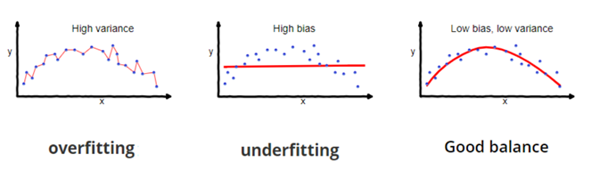

In supervised learning, underfitting happens when a model unable to capture the underlying pattern of the data. These models usually have high bias and low variance. It happens when we have very less amount of data to build an accurate model or when we try to build a linear model with nonlinear data. Also, these kinds of models are very simple to capture the complex patterns in data like Linear and logistic regression.
In supervised learning, overfitting happens when our model captures the noise along with the underlying pattern in data. It happens when we train our model a lot over the noisy datasets. These models have low bias and high variance. These models are very complex like Decision trees which are prone to overfitting.

Figure: Example of overfitting and underfitting